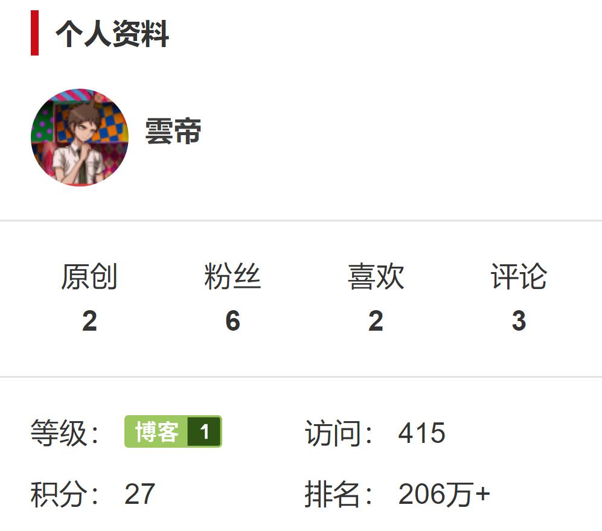

博客博客
博客博客
用户登录与注册 |
(C/C++)初识单向链表:版权声明：本文为博主原创文章，未经博主允许不得转载。第三，链表的输出，这部分比较简单。代码部分：/*通过过渡指针list_temp从head位置到链表结尾，移动至每个节点来实现输出成员*/
void print_list()
{
Node *list_temp = list_head;
cout << "*** LISTING ***" << endl;
while(list_temp != NULL) //判断当前位置是否存在节点
{
cout << "id:" << list_temp->id << '\t' << "score:" << list_temp->score << endl;
list_temp = list_temp->next;
}
cout << "*** END OF FILE ***" << endl;
}
这里可以理解为吃烤串，不过正常的吃烤串是从竹签尖的那端开始吃，而这里的“吃烤串”是从竹签底端的肉(list_temphead)开始往上吃（即往list_temp的箭头方向移动） 第四，链表的冒泡排序对于刚入门的菜鸟，先了解使用冒泡法排序链表，感兴趣的可以去了解快排和归并排序。void cmp_list() //升序冒泡排序
{
Node *list_temp = NULL; //控制外循环，指向需要排序的第一个节点
Node *list_end = NULL; //控制内循环，指向需要排序的最后一个节点
list_temp = list_head; //指向表头
while(list_temp != list_end)
{
while(list_temp->next != list_end)
{
/*这里的数据交换根据实际情况，但原理相同*/
if(list_temp->id > list_temp->next ->id ) //当前节点的id与下一个节点的id比较
{
//用整数cache_id和cache_score分别记录当前的位置的id和score
int cache_id = list_temp->id;
int cache_score = list_temp->score;
//下面的代码是交换两个链表的数据
list_temp->id = list_temp->next->id;
list_temp->score = list_temp->next->score;
list_temp->next->id = cache_id;
list_temp->next->score = cache_score;
}
list_temp = list_temp->next ;
}
list_end = list_temp; //将当前排序的最后一个节点向前挪动一个位置
list_temp = list_head; //重新指向表头
}
}
只要能理解数组的冒泡法，相信也能理解链表的冒泡排序，因为原理是相同的。这段代码已经做过优化处理，链表无节点和只有一个节点的情况也考虑到了。第五，链表数据的插入void add_point()
{
cout << "请输入新数据:" << endl;
Node *list_temp = list_head;
Node *new_body = new Node();
/*成员赋值*/
cin >> new_body->id >> new_body->score;
new_body->next = NULL;
/*if里的思想是:如果当前是空链表或新数据比第一个数小,则这样写
else里的思想是:链表已排序过,所以满足插入条件是出现数据比现在的值大
*/
if(list_temp == NULL || new_body->id < list_temp->id)
{
new_body->next = list_temp;
list_head = new_body;
}
else
{
while(list_temp->next != NULL && list_temp->id < new_body->id )
{
if(list_temp->next->id > new_body->id)
break;
list_temp = list_temp->next;
}
new_body->next = list_temp->next;
list_temp->next = new_body;
}
}
链表排序后的插入我认为不好写，这段代码是我经过不断优化的最终写法，也有更简单的方法，那就是在链表尾部添加新数据，接着再次调用排序（例如冒泡法）。链表插入的简单思想就是插入作为第一个节点，还是不是作为第一个节点插入。事实上，用双向链表来做插入更简单。 第六，链表的节点删除void delete_point()
{
int id;
cout << "请输入要删除的id:" << endl;
cin >> id;
Node *list_temp = list_head, *cache = NULL;
if(list_head != NULL)
{
if(id == list_temp->id) //删除第一个节点
{
cache = list_temp->next;
delete (list_temp);
list_temp = NULL;
list_head = cache;
}
else //删除其他节点
{
while(list_temp->next != NULL && id != list_temp->id)
{
cache = list_temp;
list_temp = list_temp->next;
}
if(id == list_temp->id)
{
cache->next = list_temp->next;
delete (list_temp);
list_temp = NULL;
}
}
}
}
链表的节点删除就是通过搜索来删除数据，主要是要考虑，当前符合的数据是链表的第一个节点还是其他节点，如果是第一个节点的话，那么就必须得修改list_head的位置。第七，链表的清空void delete_all()
{
if(list_head != NULL)
{
Node *list_temp = NULL, *cache = NULL;
list_temp = list_head;
while(list_temp != NULL)
{
cache= list_temp->next;
delete(list_temp);
list_temp = NULL;
list_temp = cache;
}
}
cout << "链表已清空:" << endl;
}
链表的清空非常简单，并且链表的清空是必须的！！一定要防止内存泄漏。每次删除，建议令该节点等于NULL，防止出现小问题。我希望我的这篇博客对链表初学者可以为提供思路，注意，链表是C++/C里很重要的一个部分，还请大家看我的代码不仅仅是复制黏贴那么简单。我的代码或许还存在一些bug或可以完善的地方，欢迎大佬们指点与讨论。 |

公告栏
|